| 日付 | 2012年7月22日（日） |
|---|---|
| 山域 | 箱根 |
| メンバー | 家族（妻、長女・1歳） |
| 山行形態 | 子連れ日帰り |
| アクセス | 車 |
| ルート (Map) | 大涌谷 (10:08) - (11:02) 冠ヶ岳 - (11:18) 神山 (11:54) - (12:43) 箱根駒ヶ岳 (13:04) - (14:43) 大涌谷 |
夏山に備えて体力アップのため、丹沢の檜洞丸に行こうとしたが、朝起きてみると雨が降っている。
とりあえず現地に向かったが、大井松田ICに着いても 雨が止む気配がなかったため行先を箱根に変更。
訓練登山から物見遊山に切り替える。
箱根に着いた後どこに行こうか迷っていたが、とりあえずは一大観光地の大涌谷に行ってみることにする。
ガラガラの大涌谷の駐車場に到着する。標高1040m。
視界はほとんどないが、微かに立ち上る噴煙が見える。
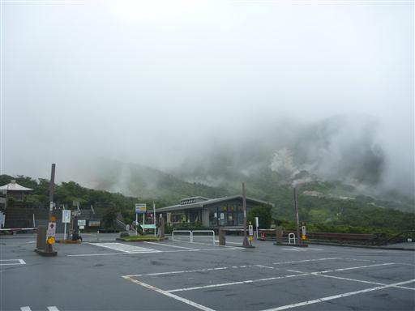
大涌谷の展望所までは遊歩道が整備されている。
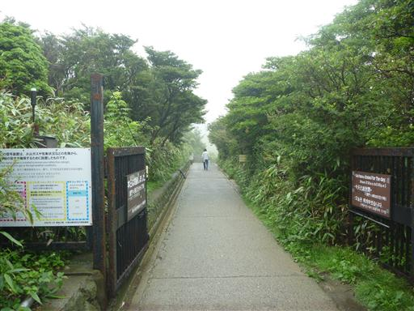
辺りの水は白く濁っている。
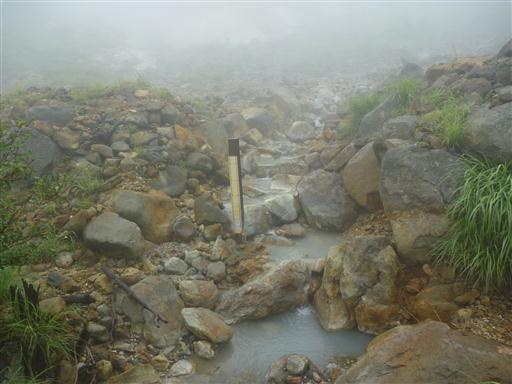
遊歩道は大勢の観光客が歩いている。聞こえてくるのは中国語が多い。
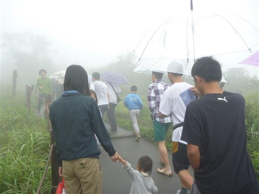
大涌谷の標識に到着。この背後に大涌谷と鋭角に聳える冠ヶ岳が見えるはずなのだが、
今日の天気では何も見えない。
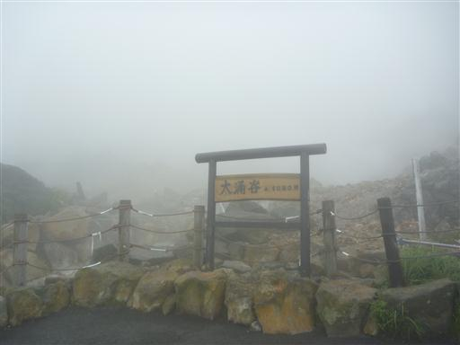
足元には荒々しい風景が広がっている。
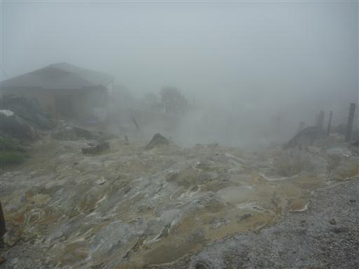
地面が温かいからか猫が寝ている。
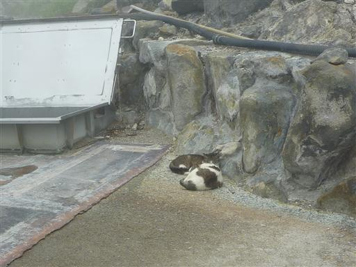
ここでは大涌谷の名物・黒玉子が売られている。
5個500円でばら売りはしていない。あくどい商売だ。
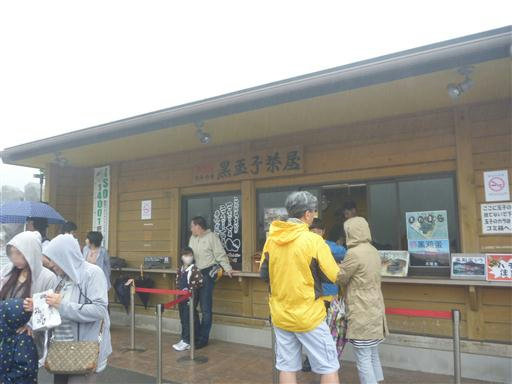
大勢の観光客が黒玉子を食べている。
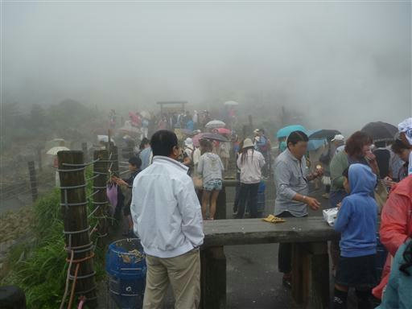
雨が小康状態になったので、ここから神山に登ってみることにする。
大涌谷から神山への登山道は火山ガスの影響で閉鎖されていたのだが、
いつの間にか通れるようになっていたみたいだ。
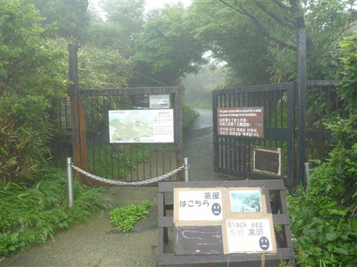
「立ち止まらないでください」の標識。展望もあまりないので足早に通り過ぎる。
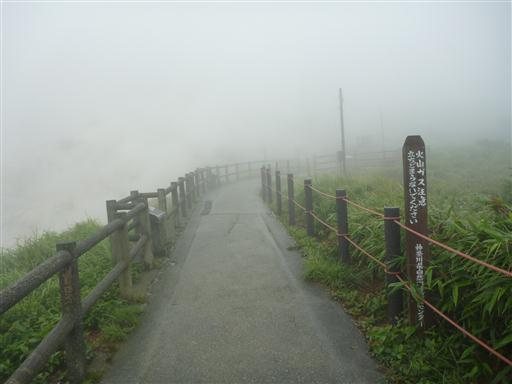
辺りは硫黄の臭いが立ち込めている。
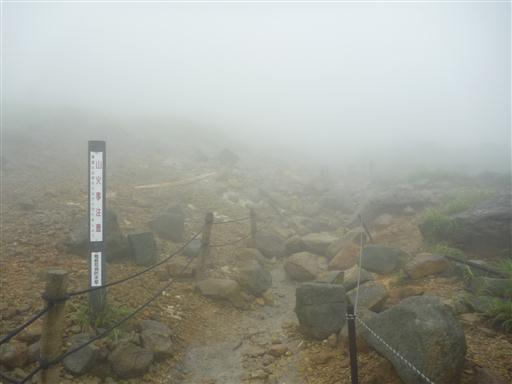
火山ガス地帯を通り過ぎると植物の姿が見られるようになる。
しかし背の高い植物は立ち枯れていて、背の低い植物しか見られない。
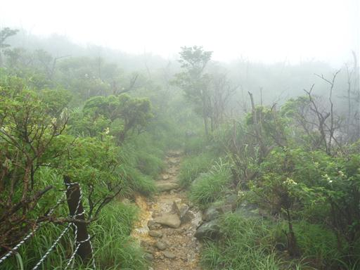
しばらく歩くと美しい樹林帯となる。
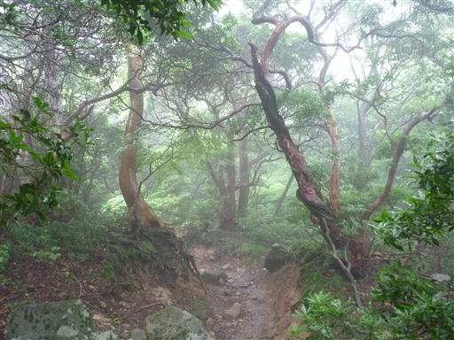
コアジサイの花が群生している。
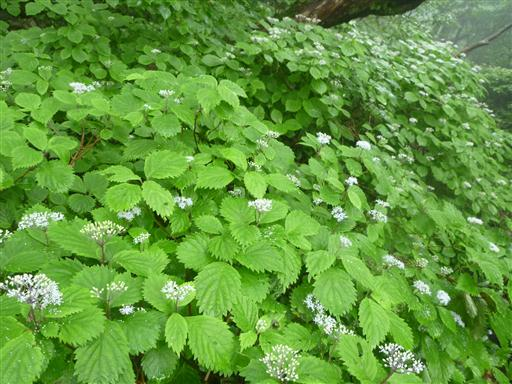
冠ヶ岳への分岐点があったので、立ち寄ってみることにする。
前回ここに来たときはスキップした山頂だ。入口に鳥居が立っている。
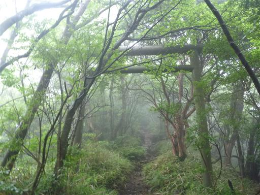
少し登った先の狭い狭いスペースに神社がある。
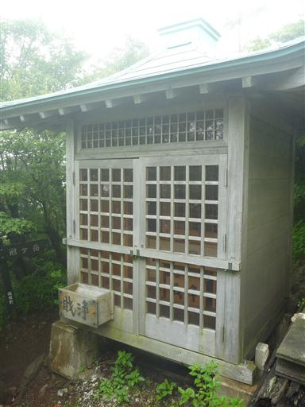
神社からしばらく登ると冠ヶ岳に到着する。標高1409m。
展望は全くない狭い山頂だ。
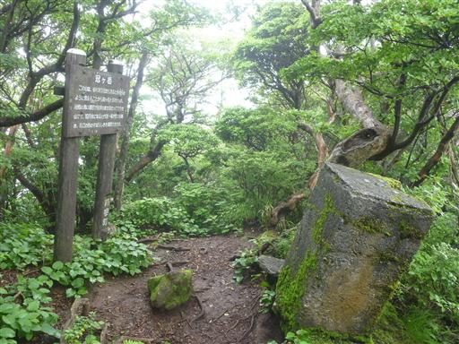
バイケイソウの花。葉も目立つが花も良く目立つ。
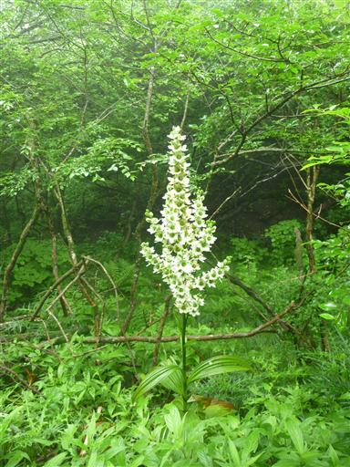
神山山頂に到着する。標高1438m。
箱根の最高峰だ。
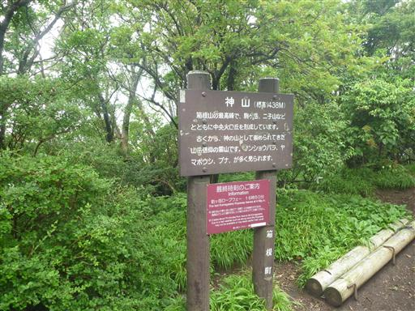
天気の悪い山頂は無人で静かだったが、昼食をとっていると団体登山者がやってきた。
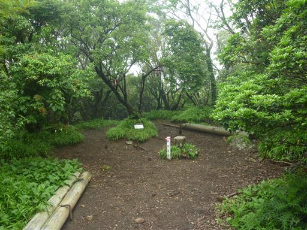
神山からさらに駒ヶ岳を目指すことにする。
鬱蒼とした樹林帯が広がっている。
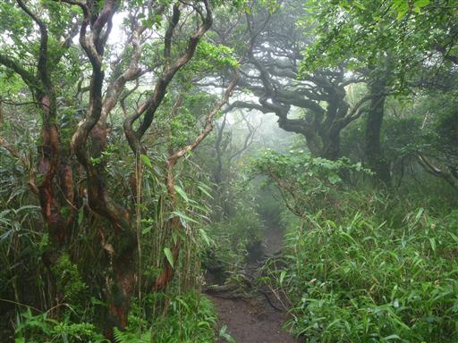
途中で視界が開ける。天気が良ければここから駒ヶ岳が見えるはずだ。
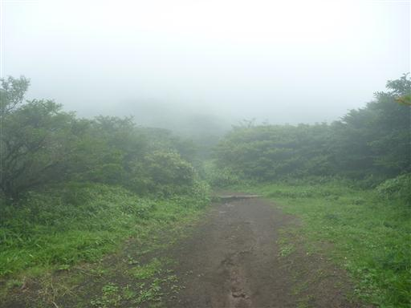
駒ヶ岳への最後の登りは笹原の中の登りだ。
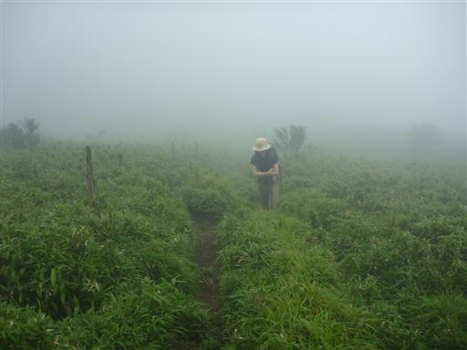
箱根駒ヶ岳山頂到着。標高1357m。
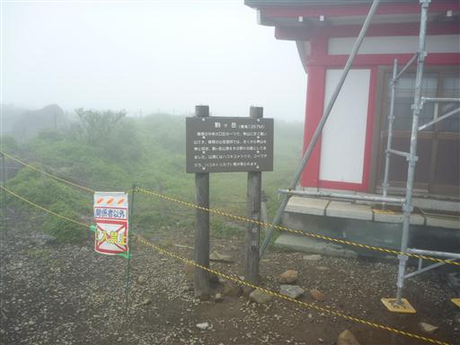
山頂に建つ箱根元宮。
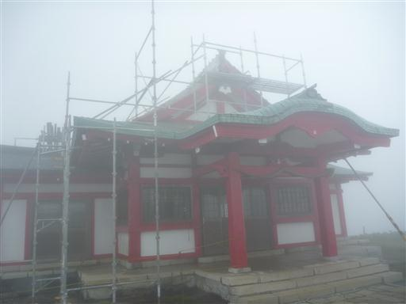
建物の中はきれいに整備されている。
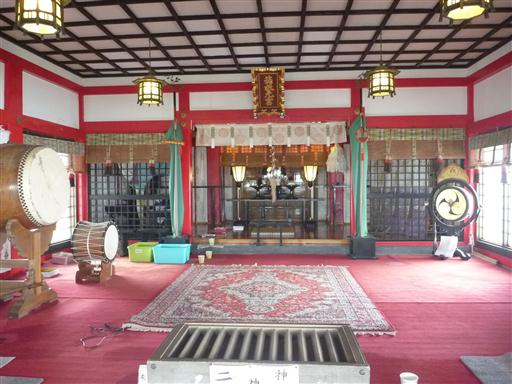
駒ヶ岳の山頂部は広い。ぐるっと一周歩いてみたが、ほとんど何も見えない。
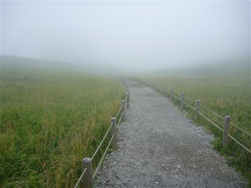
靄の中にロープウェイ山頂駅が見えてくる。
大涌谷は賑わっていたのに、こちらは人の気配が全くない。

下山は神山山頂を迂回するルートを歩くことにする。
こちらの道は植林地帯が広がっている。
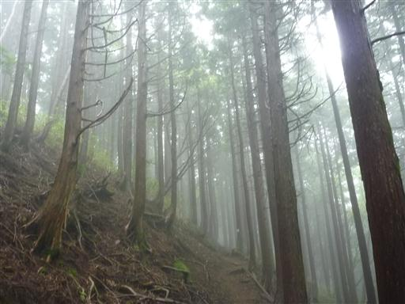
再び大涌谷を通過する。登りの時より若干視界が良くなっているが谷の全貌を望むことはできない。
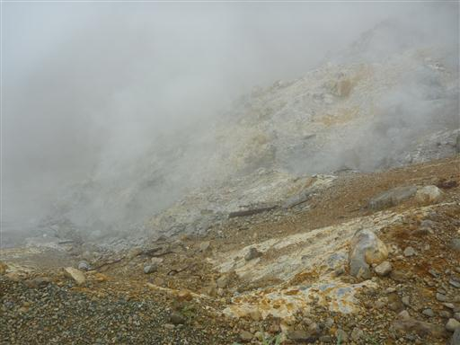
足元の地面は不気味な色に変色している。
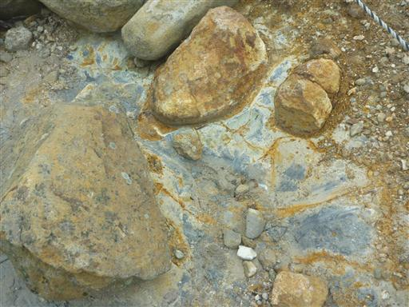
駐車場に戻ってくる。この時間でも駐車場は満車。
駐車場の順番待ちをしている車が長蛇の列を作っていた。
展望は全くなかったが雨はほとんど降らず、美しい樹林帯の中を歩けた山行だった。
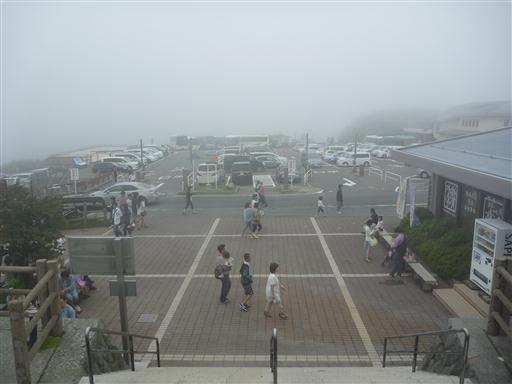